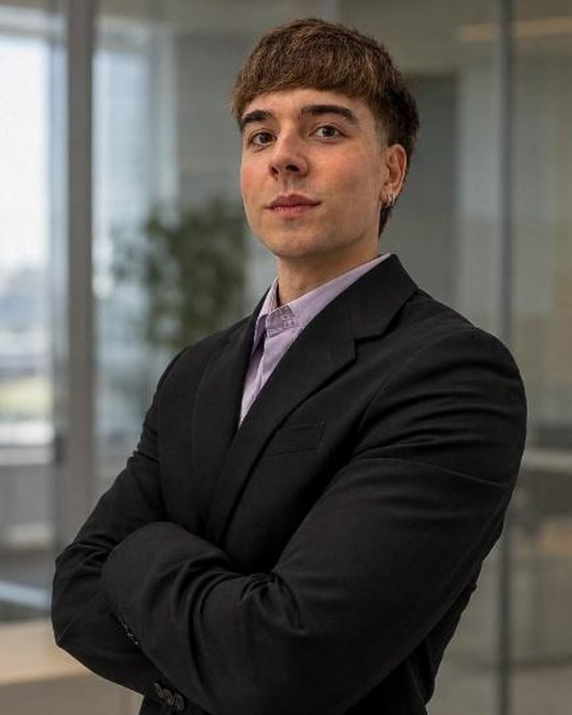

Enzo Núñez Dos Santos
Enzo Núñez Dos Santos es estudiante de tercer curso de Administración y Dirección de Empresas en la Universidade da Coruña. Es cofundador y organizador de ParlaCoruña, una simulación del Congreso de los Diputados que ha reunido a más de 100 universitarios en sus dos primeras ediciones y que celebrará la tercera en enero de 2027. El proyecto ha obtenido presencia en la prensa nacional y gallega, con artículos en El Español y El Ideal Gallego, y él mismo lo ha presentado en los micrófonos de Radio Líder Santiago.
En paralelo, ha desarrollado su experiencia en el mundo del emprendimiento a través del programa Santander X Explorer de Banco Santander y del Startup Programme de Junior Achievement España, con una idea de negocio basada en inteligencia artificial que presentó en el XII Encuentro Internacional de Jóvenes Emprendedores (EIJE). Hoy aplica esa experiencia en Marxe, su principal proyecto emprendedor, del que es cofundador. Se trata de una consultoría que impulsa la competitividad de pymes y autónomos de A Coruña optimizando sus costes y reforzando su visibilidad.
Me apasiona la economía y es lo que me llevó a estudiar el grado en Administración y Dirección de Empresas. Dentro de este campo, me he volcado especialmente en las finanzas y la inversión, un ámbito en el que cuento con experiencia práctica como inversor particular y que me permite seguir de manera muy cercana el funcionamiento de los mercados, la valoración de empresas y las grandes decisiones de capital. He complementado mis estudios con formación específica en finanzas y en inteligencia artificial. La geopolítica también forma parte de mi día a día, ya que es fundamental para entender la economía y los mercados.
El talento joven no necesita permiso, necesita escenarios. Las universidades concentran un potencial extraordinario, miles de jóvenes con ideas, proyectos y capacidad para transformar su entorno, y cada vez que ese talento encuentra un espacio para expresarse, demuestra hasta dónde puede llegar. Cuando el conocimiento que nace en la universidad se comparte con la sociedad, su impacto se multiplica. Impulsar esos escenarios es una de las mejores inversiones que puede hacer una universidad, y también una ciudad.
Siempre he admirado el formato TED, pero vivir en directo TEDxJardinesDePereda me hizo comprender su verdadero alcance. Una buena charla puede transformar una sala, cambiar la forma de pensar de quien la escucha y dejar huella en la ciudad que la acoge.
Eso es lo que quiero para A Coruña. Organizar ParlaCoruña me demostró que en la UDC hay ideas que merecen un escenario a su altura, y mi objetivo es que TEDxUDC lo sea. Un escenario que haga visible el talento de esta ciudad y de su universidad y lo proyecte, charla a charla, mucho más allá de Galicia. A Coruña siempre ha sido una ciudad abierta al mundo, y con TEDxUDC queremos que el mundo mire a A Coruña. Es el comienzo de un proyecto llamado a perdurar y a crecer edición tras edición, y contamos con la ciudad, la universidad y el equipo para conseguirlo.
Fuera de mis estudios y de mis proyectos, el deporte ocupa una parte fundamental de mi vida y es la base de la constancia y la disciplina que trato de aplicar en todo lo que hago. Para desconectar, recurro a actividades como pasar tiempo en contacto con la naturaleza o la lectura, aprovechando esta última para seguir formándome en temas económicos, financieros y de desarrollo personal. Otra de mis grandes aficiones es viajar: el contacto con otras culturas y con personas de trayectorias y formas de pensar distintas amplía la perspectiva como pocas experiencias pueden hacerlo.
Lo que más me motiva es generar un impacto positivo en las personas y crear proyectos que dejen algo valioso en quienes forman parte de ellos. Lo he buscado con ParlaCoruña y lo busco ahora con un Club de Bolsa en la UDC, que estamos en proceso de constituir como asociación universitaria para acercar la inversión a otros estudiantes. Eso es lo que me ha traído hasta TEDxUDC, y lo que aspiro a conseguir con él a una escala mucho mayor.